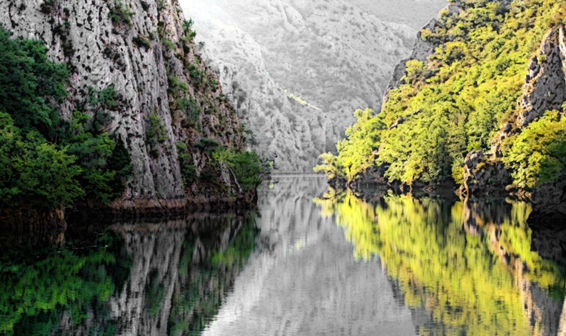

The most popular tourist walk starts from the Old Railway Station down Macedonia Street, past the Mother Teresa Memorial House and Feudal Tower, down Macedonia Square, across the Stone Bridge, past the Holocaust Museum, Museum of Macedonian Independence, towards the Turkish Bazaar and ending at the Kale Fortress. The reconstructed Old Theater and the new Archaeological Museum add additional cultural landmarks along the main tourist vertical.
For the last several years the city centre has seen a major transformation and now one can spend an entire day and still not
manage to see everything. From the Triumphal Gate to the giant statue of Alexander the Great, the numerous museums
surrounding the area and the old stone bridge, the cultural offering is simply immense. The area is buzzing with nightlife as well,
with many of the city's most attractive bars, coffee shops and restaurants beeing located on the Macedonia street.
Shopoholics will have their hands full as well as there are plenty of shops to choose from with two of the biggest shopping malls
within a 5 minute walk.
There is plenty to see and do. If this is your first time visiting Skopje,
you might want to join one of the organized tours or hire a local tour guide to show you around.
...or if you are too lazy to do any of that, stay in and browse the city through Google Street view ;).
T R A N S P O R T
By plane
Skopje has an international airport, Skopje "Alexander the Great" Airport. It is located in Petrovec, some 20 kilometres (12 miles) east of the city.
Skopje airport has connections to several European cities, including Vienna, Zürich, Brussels, Istanbul, London and Rome. It also maintains a direct connection with Dubai.
To travel between the airport and the city centre:
- Vardar Ekspres operates buses between the airport and the city center. The journey takes approximately 30 minutes and costs MKD 175.
The bus stops at the International Bus Station and the Holiday
Inn hotel. Buses leave the airport every day at 01:00; 02:50; 04:30; 09:00; 10:30; 13:30; 15:50; 18:30;
and 20:30.
- Taxi service is regulated. Airport taxi is the only licensed taxi operator from the airport. The fare to the center is approximately MKD 1,200.
By bus
- Skopje Avtobuska Stanica , the intercity bus station, is adjacent to the
train station, 2km southeast of the city centre. Left luggage facilities are available.
- Skopje has a vast, frequent and efficient bus network. Public buses (red in color) cost 35 MKD if you pay the driver, or 30 MKD if you buy
your ticket in advance from a kiosk. Private buses (all the other colors) cost 25 MKD (you pay the driver directly).
The new double deck buses may feature English translations to routes, but it's easier just to stick to the bus numbers.
Bus maps can be found on almost all bus station, or on the official site.
By taxi
The top taxi companies according to Balkan Viator are the following:
- Bel Mercedes Taxi, Phone: +389 2 15183
- City Taxi, Phone: +389 2 15183
- Classic Taxi, Phone: +389 2 15183
- De Luxe Taxi, Phone: +389 2 15187
- Ellite Taxi, Phone: +389 2 15169
T O U R S
Half-day tour of Skopje’s Surrounding Beauties 
{kind=link}
Price: €25 per person.
Duration: 4 hours
Witness the frescoes that are among the highest achievements in existing Byzantine art at St. Pantelejmon
Visit the canyon Matka, one of the most popular outdoors destinations
BOOK NOW
Full-day tour:Best of Skopje
{kind=link}
Price: €36 per person.
Duration: 6 hours
BOOK NOW
Matka CanyonSightseeing Tour
{kind=link}
Price: €50 per person.
Duration: 6 hours
BOOK NOW
Private Tour with a Local
{kind=link}
Price: €30 per person.
Duration: 2-4 hours
BOOK NOW
Half-Day Stobi Wine Tour{kind=link}
Price: €45 per person.
Duration: 6 hours
BOOK NOW
Vodno Night Hiking with a Local{kind=link}
Price: €47 per person.
Duration: 4.5 hours
BOOK NOW